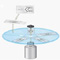

| Sample | Selected Papers | Meetings Organized |
|
Research Research areas of interest include Turbulence; Stability and Transition; Geophysical Fluid Dynamics; Thermal Systems; Unsteady Aerodynamics; Experimental Fluid Mechanics; Fluid–Structure Interactions, including Compliant Coatings; Flow Control; and Micromechanics, Microfluidics and Microelectromechanical Systems (MEMS). In 2006, I got myself into a brand new area of research: Prediction, Control and Mitigation of Large-Scale Disasters.
Please contact me if you would
like to receive reprints of any of the articles in
the above List of Publications.
 The MEMS revolution: a variety of micron-size devices used as microsensors and microactuators. Visit emicronano.com for more photos and movies of microelectromechanical systems.
|